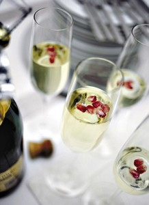

饮酒之害
冯冯
佛陀在世时，已经立下五戒，其中之一是戒酒。当时文字简单，语焉不详，但是言简意赅，用意至深。显然佛陀早已注意到酒之大害，因此禁止饮酒；饮酒多祸，自古而然。
现代饮酒之害，比古代更严重，西方人因酒醉驾车而车祸身亡者，不知凡几，东方社会的酒醉车祸枉死鬼，也不比西方为少。在美加，酒醉驾车，占车祸死亡案件的一大半，每年的酒醉车祸死亡人数，多达万人，重伤者与被害者，更不止此数。尤其是在重要假期节日，例如圣旦节、感恩节、复活节，酒醉车祸伤亡更多。
西方人嗜酒者多，就是一般非嗜酒者，也不免多多少少喝一些威士忌、马丁尼、白兰地、待客以酒，平时上酒吧饮几杯啤酒，宴会务必有香滨酒才显派头，或者饮俄国伏卡，吃鱼子酱，认为是高级享受。
中国人饮酒风气，也不输于西方人，豪华盛宴，固然也有香槟、白兰地，威士忌、伏卡；普通饮宴，也免不了茅台、花雕、高梁、日本清酒、青岛黑啤。小市民大谈或是花生米小聚，也有低廉的米酒、黄酒，猜枚划拳，兴高采烈，不醉无归。
法国人喝酒当饮水，俄国人饮伏卡酒是主食，再穷也得喝伏卡，不喝伏卡不是男子汉。这两个民族患肝癌的比例，为全世界之最多。美国人的肝癌患者人数，也很可观，列为世界第三。从电视播映的研究统计，肝癌是饮酒者的头号杀手，在亚洲，患酒精中毒及肝癌，最多的地区是，第一：台湾；第二，中国大陆；第三，日本；第四，香港，比例是与消费能力成 正比。
台湾人上酒家谈生意，召酒女“当番”（陪酒），酒女不断灌醉顾客，顾客拼酒逞豪。台湾盛行“大拜拜”，什么神诞节日，家家大摆酒席，见者有份，生张熟魏，都可登堂入室，一律欢迎，举杯互祝，宾客川流不息，愈多人来饮酒，东主才愈有面子。满街满城都是过门酒客，人山人海，不少酩酊大醉，倒卧街头，酒醉车祸、酒醉殴打行凶，不可收拾。
一般华人家庭，虽不饮烈酒，却也有些饮用甜酒、糯米酒、补酒（例如：虎骨木瓜酒、三蛇酒、首乌酒、人参酒、当归酒、加皮酒等等补酒）。认为药酒容易吸收补身，不饮补酒的家庭主妇，至少也使用厨酒炒菜，也有不少医生劝人每天饮些红酒以助血液循环。吃西餐固然必饮红酒，食唐餐也有饮酒，因为肉类很腥，需有美酒的香醇来掩盖它。
美酒的确很香醇，但是一般人不知 美酒所含的酒精，会使人酒精中毒与形成肝癌、心脏病、中风、高血压。电视上见过的法国酒徒的肝脏癌症，肿大有如篮 球，腹涨如西瓜，死后解剖，全肝硬化紫黑色，十分可怖。该人每天必饮干那酒（COGNAC） 或威士忌。干那酒是最普通的法国名酒之一，价钱不贵，人人可饮；香槟酒 （CHAMPAGNE）则是高级贵酒，年代越久越名贵。
其实，香槟是译音，原意是“乡间”，原产于法国南方乡间盛产葡萄地区，不知为何身价奇高？酸溜溜，似饮劣醋，还不如饮新鲜苹果汁！伏卡酒辣得像喝火酒精，它的酒精含量是八十度以上（80 PROOF）， （即是百份之四十），威士忌、茅台等等名酒，含酒精也与之相近。有些烈酒含酒精在百份之一百六十以上，而一般药用酒精，只是百份之十八，最强的药用酒精，含量是百份之九十六，一杯即可能致命。饮烈酒实在跟饮纯度酒精差不多，无异慢性自酖式的自杀；啤酒也含酒精百分之六至十，长期饮啤也会酒精中毒。
不幸地，一般人不知酒精中毒之危险，说“醉里乾坤大，壶中日明长”；“一醉解千愁”。有人借酒消愁，有人饮酒逃避现实，有人饮酒忘忧，有人借酒行凶，有人饮酒补身，有人饮酒从欲，......一般人就算不酗酒，也以烟酒为交际应酬的必需品，青年人更以吸烟饮酒为荣。烟抽得凶，一天两包； 酒饮得多，一饮几瓶啤酒，一手持烟，一手举杯或举瓶，才显得男子汉大丈夫气概！
作家很少不沾烟酒，英雄豪侠更少 不了烟酒与女色。大诗人李白酒醉堕水捞月而死，千古美谈。近代一位武侠小说作家以善饮出名，笔下的武侠都是整坛喝酒，他自身也终于因饮酒过量致死，写历史小说出名的一位作家也是酒醉心脏病暴发而身亡。这些是名人，醉死有新闻，那些无名之辈，醉死倒卧街头巷尾，不知凡几，无人理会，只当是死一只狗。在街头踉 踉跄跄，东歪西倒的醉汉醉猫，终难逃此种收场。
酒精中毒的一般征状，即使未到严重阶段，也有自觉，例如：高血压、心脏扩大、心律失常、心绞痛、神经衰弱、四肢发抖、全身酸痛、肝痛、胃痛、呼吸因难、记忆衰退、糖尿、肾病、脾出血、胃肠出血......种种病痛，都会可能发生，并且饮酒过量才会引起。即使自以为“饮得不多”“一天一杯”而已，“应酬应酬”，也会使酒精累积在血液内，伤害肝脏于无形，终于形成肝癌与各种疾病。法国人死于肝癌的比例，比世界各国为高，俄国人也多死于肝癌，大部份是饮酒所致。肝癌很多由于抽烟及饮 酒引起，又抽烟又饮酒，那就包你“中奖”。肝癌至今仍无药可治，西医的最佳治疗仍是换肝，可是换肝未必被身体接受。凡是移植器官，被抗拒的比例都很高，换心、换肝，比换骨危险得多，生存率很低，死亡率可能高达百分之九十。
酒精之毒，与香烟之害，已是人所 周知，但是人们仍然吸烟饮酒。有人说，“吸烟饮酒会死，不沾烟酒也会死，也不能活上一千年”，因此，及时享受为上。这种论调，非常可怕，害人不利已！不错，不沾烟酒，也活不到一千年，甚至未必活到一百岁，但是，烟酒带来的疾病身心痛苦，好受吗？
美加社会，街头到处是醉汉，被称 为“醉猫”，没有钱买好酒，就去买剃须香水，或消毒酒精，甚至买廉价的木厂酒精（工业用），或华人商店的厨酒，藉以满足酒瘾。这些醉猫，醉到天昏地黑，倒卧街头、横尸穷巷，这样的人生又有何意义？
酒精中毒是无药可救的长期疾病，必须从少年就不饮酒，能拒绝第一杯酒，就能拒绝饮一千杯！不会中毒，若不能拒绝第一杯酒，以后就不容易戒饮酒，越饮越多，越上瘾，像抽烟一样，上了瘾就难戒。
中国人在酒席敬酒，是很“野蛮” 的、残忍的！敬你一杯，你非饮不可，你若不饮，就是不给面子，往往敬酒为争面子，弄到彼此不欢，甚至大打出手。你若饮了一杯敬酒，他又要再敬一杯，非要你再干杯不可，敬酒变成强迫“灌酒”。在喜宴上，把新郎灌醉，是最赏心的乐事。中国人敬酒方式的“野蛮”、“不讲理”与“残忍”，不知源起何处？相较之下， 西方人敬酒却是很文明的，西方人从不强迫你干杯。西方人敬酒，是他自己干杯，“祝你生辰快乐”；他自己干杯，你饮不饮，他不管，也不强迫你。
记得多年前在台湾，某次在一处小宴会，两个邻桌的陌生男子，已经有些醉态，突然过来向我们桌上的美国客人敬酒，叫他“干杯”！美国人说有心脏病，医生吩咐不能喝酒，我们把话翻译，那两位男子竟大发脾气，说美国人太不给面子，叫他们下不来台，“非要你干杯不可！”又骂：“你们这些洋奴，帮着洋人看不起我们！”美国朋友只好离座，“我们走 吧”，谁知那两个醉汉拔出手枪指着美国人：“你太不给面子，不干杯，不许走。”美国朋友不得已，举杯沾唇，算是听命，可是对方咆哮：“不行，非干杯不可！”
佛教是戒喝酒的，可是信佛的人平时戒酒，在喜庆酒席也有人强蛮敬酒，灌醉新郎新娘，真是很无聊！信佛应该无时无地均守戒才对，自己戒酒，亦不应强迫别人喝酒。
这个真实故事，后来因宪兵警察及时赶到，才把僵局打破，没演变为命案。国人的敬酒，真是可怕，哪像文明古国礼仪之邦的人？强迫别人干杯，就等于强迫他贩毒，是一种刑罚，非常野蛮残忍！
有些宗派或个人准许饮酒，称为“般若汤”，实在是违反原始佛教的行为，明知故犯。此种犯戒，那是各人因果自负，酒醉麻木，怎来“般若”？自欺欺人而已！
原载《佛网》网站
2000 年 ── 2002 年